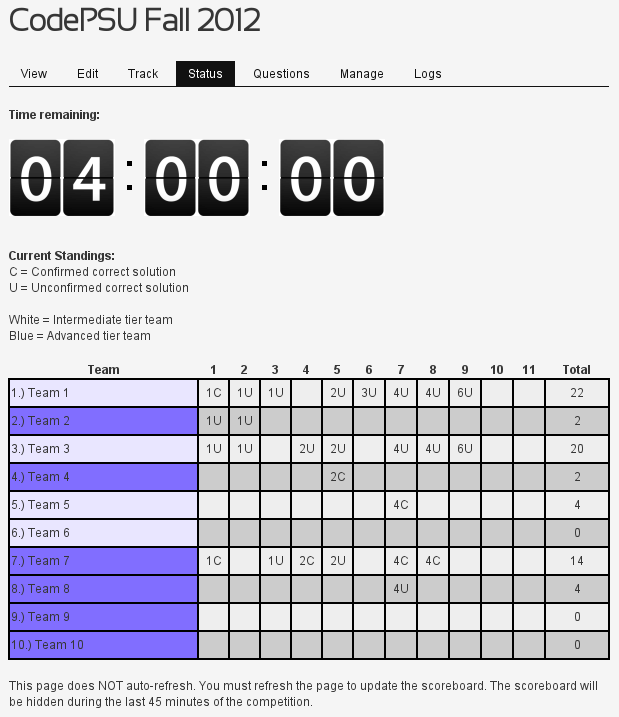

Penn State ACM
&AWC
and sponsored by...

Before we start, check in if you haven't done so. We'll match up those without teams soon.
Let's go over a few technical items to avoid confusion.
You should have 1 laptop for your team that is ready to go for writing C, C++, or Java.
Your code will be compiled on Linux, but it's just fine to work on Windows or Mac. We'll only be using standard libraries anyway.
All submissions are subject to a secret time limit; take too long, and your process is killed.
If you use C or C++, you must use `int main()` rather than `void main()` and NEVER use `system("pause")`.
If you use Java, the file containing your main function must be called "main.java".
Do not prompt for input. Anything your program prints is considered output.
Read each problem carefully and pay attention to the given input bounds.
Finally, remember that competition programming problems are difficult. Persistence pays off here.
If you were here for CodePSU last Spring, you're awesome!, but we also made a few changes.
The code submission system has been completely rewritten. We'll do a demo soon, but showing off a little never hurts.
The biggest improvement: Immediate feedback and automatic time and score keeping. At any time you can check out the status page.

It's pretty cool.
We also increased the time limit from three hours to four hours and based each problem's point value off its difficultly.
Here's a quick timeline:
- 1.00-2.00: Check-in and submission system demo
- 2.00-6.00: Competition
- 6.00-7.00: Dinner and awards
Shameless plug: We're doing a hayride with the Penn State AWC on Wednesday, October 24.
http://goo.gl/m2CyN for more details.
Curious about how all this works?
Sure you are!
It's all open source.
github.com/shanet/codepsu
We have hundreds of dollars in prizes and t-shirts to give away.
So get ready! We'll be starting soon.